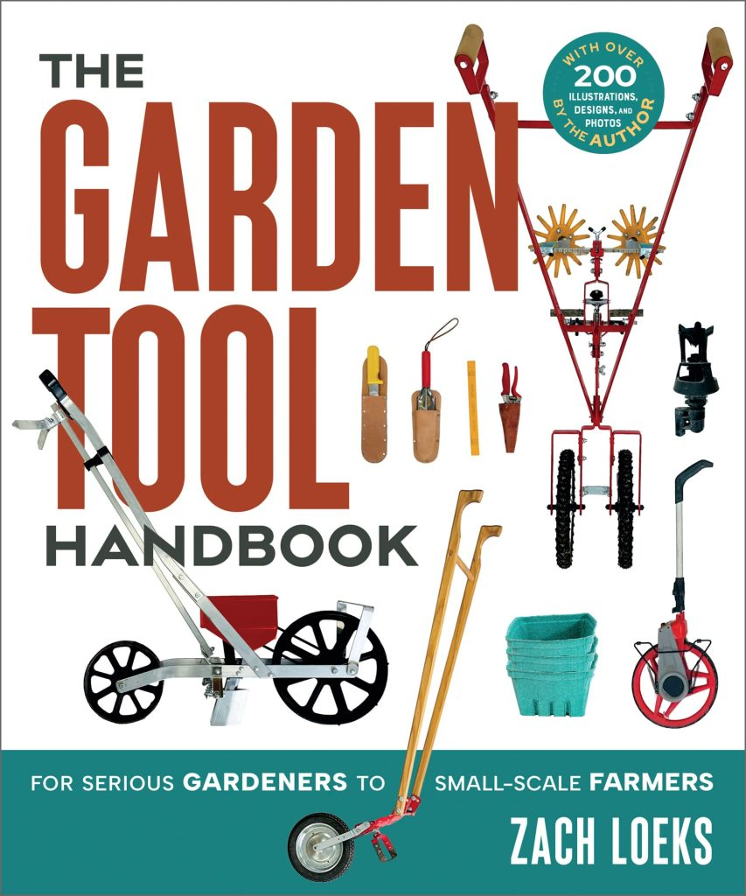
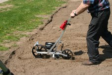
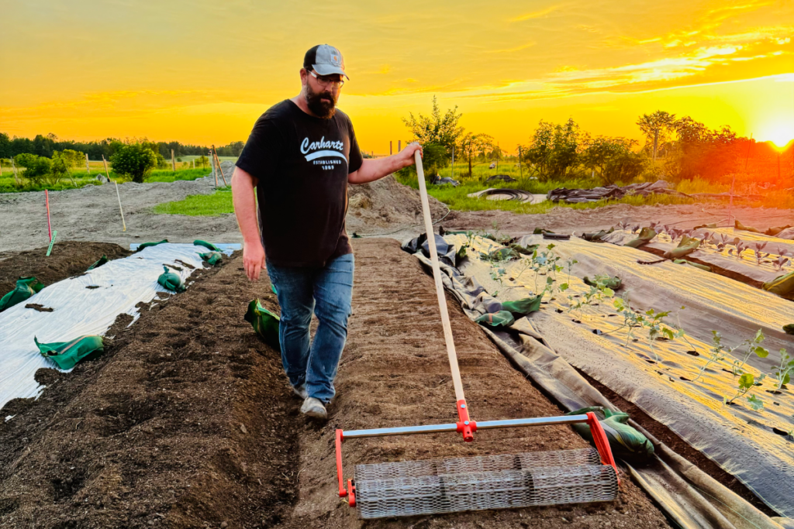
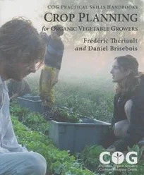
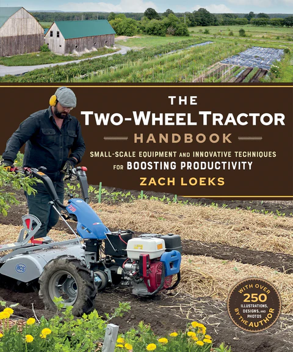
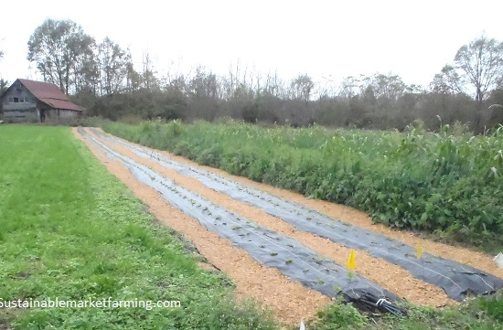
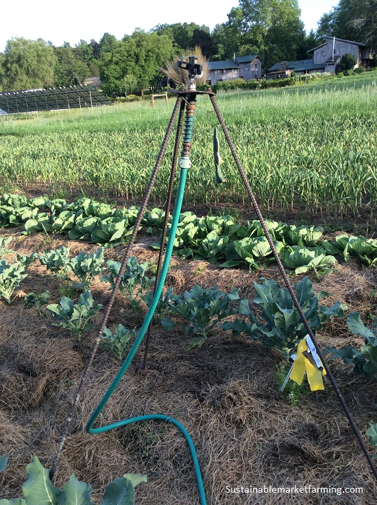

Why the right tool matters
Good tools, well understood, make for a better life. Hand tools can have ergonomic advantages for tackling repetitive tasks, bringing more comfort, enjoyment, and productivity. Tools extend our human power, reach, and capacity. Wisely chosen gardening tools help us deal with pests, weeds, diseases, and bad weather.
Don't just buy any hoe — and don't buy twenty hoes either. Understanding which tool fits which job saves money, time, and your back.
Tool types at a glance
- Long-handle tools — shovels, spades, rakes, hoes for ground work.
- Short-handle tools — trowels, hand forks, weeders for close-up work.
- Wheel tools — wheelbarrows, carts, and two-wheeled tractors.
- Multi-functional systems — one handle, many interchangeable heads.
- Power & stationary tools — washers, mills, and small engines.

EarthWay push seeder — a classic start-up garden tool.
The three scales of gardening
Zach Loeks divides growers into three phases. Knowing where you are helps you buy right:
- Start-up: Focus on tools to prepare land better — shovels, grub hoes, rakes.
- Scale-up: Seeding, weeding, and watering must become more efficient — seeders, wheel hoes, irrigation.
- Pro-up: Focus on harvest, post-harvest, and storage — carts, washers, cold storage.

The garden operation cycle
A systematic approach helps growers — especially new ones — stay on track and get the best results. The cycle has 16 stages:
- Site Analysis & Sampling
- Garden Design & Crop Planning
- Garden Starts (seedlings)
- Primary Land Preparation
- Plot & Permabed Forming
- Fine Seedbed Preparation
- Seeding & Planting
- Irrigation
- Garden Crop Maintenance
- Crop Weeding
- Garden Harvesting
- Season Extension
- Post-Harvest Handling & Curing
- Cold Storage
- Marketing
- Cleanup & Maintenance

Soil preparation
Tarps or weed barrier can kill existing plant matter in 2–6 months ("frying"). Solarization uses clear plastic to kill pests in the top 4 inches of soil. After frying, work the soil with a shovel, spade, or digging fork — or a two-wheeled tractor for areas over an acre.

A heavy grub hoe suits most soil; very light soil may need less. Bed-forming (permabeds) needs only one initial tillage plus annual reshaping. Rake to leave the top firm but the soil beneath deeply worked — seed-to-soil contact is everything.
Weed management
Pre-weed and mulch before transplanting. After preparing and watering a bed, weeds germinate and are killed by shallow hoeing or flaming. Mark equidistant parallel rows so you can hoe the spaces quickly later.
For newly germinated crops, a tine weeder pulled across the bed lifts weeds without disturbing the crop — do it twice a week to catch the "white thread stage." Blind weeding works only before weeds open beyond cotyledons.

Irrigation
Water management is often the first weak link to emerge. Systems include storage, pumps, manifolds, and distribution. Sprinklers suit broadcast seeds and closely spaced rows; drip suits transplants and wide spacing.

Harvest, post-harvest & storage
Carts, wagons, dollies, and pallet jacks all help at harvest. You'll need containers, knives, and cutting tools, plus rubber bands sized right. Post-harvest may need a washing station, barrel washer, salad spinner, and waterproof clothing. Curing needs hanging space or racks plus fans.
Cold storage ranges from a root cellar to an insulated building with a CoolBot. Marketing gear includes flashlights, scissors, and comfortable clothes.
Cleanup & tool care
Remove crop residues (or turn them under), cover-crop empty beds for winter, or tarp for early spring. Woody residues become fuel for brush-hooks, billhooks, loppers, hatchets, snips, and pruners.
Care for your tools: scrapers, wire brushes, steel wool, files, sharpeners, a peening hammer for scythe blades, oil for moving parts, and linseed oil for wood handles. Dry oily rags spread outdoors to prevent self-combustion. Store small parts in a system, hang long tools, and keep a shed near the garden.
DIY projects worth trying
- Rolling row marker built from scratch for equidistant planting.
- Leek dibbler for uniform garlic planting (Zach designed five versions).
- Vermont-style cart with a mesh floor for longevity.
- Zipper beds with landscape fabric spread either side of the crop.